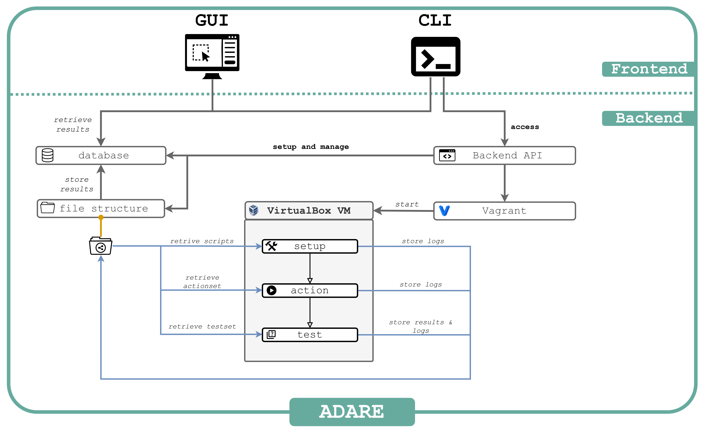

Architecture
This section provides a comprehensive overview of ADARE’s architecture, components, and design principles. Understanding these concepts will help you work effectively with ADARE and troubleshoot issues.
Overview
ADARE is a distributed system designed for automated forensic artifact analysis. It consists of multiple cooperating components that work together to execute forensic experiments in virtual machines.
{kind=link}

The core functionality of this framework lies in running experiments in virtual machines and facilitating both the viewing and publishing of their results. An experiment consists of a playbook containing a series of actions and tests, all executed on a virtual machine. The playbook defines a list of user interactions with the virtual machine using YAML-based automation, such as clicking buttons, typing text, or executing commands in a terminal. It additionally contains tests to verify the state of certain files or settings after the actions have been performed. As the playbook only contains the test’s name the full tests with their parameters are defined in the so called testset.
Experiments are organized within environments. Each environment is associated with a Vagrant box, which is essentially the virtual machine used for running experiments. Environments also include necessary details for the experiments, like the installation of specific software. These environments are organized into projects, which serve to categorize related experiments. Projects can provide common resources, such as tools used across all environments within the project.
In the system, Projects, Environments, and Experiments are represented as directories in the file system and as tables in a database. The relevant directory tree is depicted in the structure overview above. Actions are specified in a YAML playbook file, located within the experiment directory. A testset is defined in a separate YAML file, also within the experiment directory. To create an environment, a YAML file known as the :term:`environment setup file ` is required. This file contains details about the Vagrant box and other information like the guest operating system.
Terminology
Below is a list of terms that are used throughout the documentation and their meaning.
- project
A project is a collection of environments. It can be used to group related environments. It is represented by a directory on the file system and a table in the database.
- environment
An environment is a collection of experiments, which are executed on the same virtual machine. It is represented by a directory on the file system and a table in the database.
- environment setup file
An environment setup file is a YAML file that contains information needed to create the environment.
- experiment
An experiment is a specific set of actions and tests that are executed on a virtual machine. Experiments can be downloaded from the ADARE gitea or be created.
- experiment run
An experiment run is a single execution of an experiment.
- playbook
A playbook is a YAML file that defines a sequence of actions and tests for automated execution. It includes settings, variables, and an ordered list of GUI automation steps.
- playbook file
The playbook file is a YAML file unique per experiment that contains the action execution flow.
- action
An action is a single simulated interaction between a user and the virtual machine. This can be, for example, clicking on a file, typing text, or pressing a key.
- test
A test checks the state of the virtual machine and its forensic artifacts after the actions are played. This can be, for example, checking whether a file exists or whether a registry key has a specific value. Alternatively, a test can also check whether the trash bin artifact contains a within the actions deleted file.
- testset
A testset is a collection of tests defined in YAML format for validating experiment outcomes.
- testset file
The testset file is a YAML file containing structured test definitions and validation rules.
- gui
The gui is the graphical user interface of the ADARE framework. It mainly can be used to view the results of experiment runs.
- cli
The cli is the command line interface of the ADARE framework. It can be used to execute experiments and view the results of experiment runs.
- tag
A tag is a label that can be assigned to environments, and experiments. It can be used to group related environments and experiments.
Files and Directories
The ADARE framework uses a directory structure to organize its files. As experiments are grouped into environments and environments into projects, the directory structure reflects this hierarchy. The following shows the directory structure of a project.
test_project # project directory
├── programs # programs directory
│ ├── actiontool # directory for the actiontool
│ └── testtool # directory for the testtool
├── tessdata # directory for the tesseract data
├── environments # environments directory
│ ├── test_environment # directory for the env. test_environment
│ │ ├── ...
│ ├── test_environment_2 # directory for the env. test_environment_2
│ │ ├── ...
└── └── ...
Each environment directory contains a directory for each experiment.
For the environment test_environment, the directory structure looks like this:
test_environment # environment directory
├── logs # directory for the logs
│ ├── test_experiment_$TIMESTAMP # logs for a specific experiment run
│ │ ├── ...
├── results # directory for the results
│ ├── test_experiment_$TIMESTAMP # results for a specific experiment run
│ │ ├── ...
├── run # directory where files for the experiment run are stored temporarily
├── experiments # experiments directory
│ ├── test_experiment # directory for the exp. test_experiment
│ │ ├── playbook.yml # playbook file (YAML-based actions)
│ │ ├── testset.yml # testset file (YAML-based tests)
│ │ ├── metadata.yml # metadata file
└── └── └── img # directory for images used within the playbook